Community Programs
Recurring physician-led health education connecting providers with senior centers, community partners and health plans.
46 seminars · 2,000+ participants
Healthcare Marketing & Communications · New York City
I'm June. I build integrated healthcare marketing programs that connect physicians, community organizations, health plans and patients, and I measure what they deliver.
About
Healthcare marketing professional with 4+ years of experience driving patient acquisition, provider engagement, community outreach and multichannel campaigns across NYC. I combine hands-on execution with campaign analytics, audience segmentation, ROI tracking and process automation, so marketing activity turns into measurable growth.
At Rendr Care, my work spans community and provider marketing, event operations, B2B/B2C campaigns, digital and social media, clinic launches, rebranding and analytics. I work across functions with physicians, operations teams, community organizations, insurance partners and vendors.
Selected impact
Recurring physician-led health education connecting providers with senior centers, community partners and health plans.
46 seminars · 2,000+ participants
End-to-end launch plans: digital campaigns, direct mail, grand-opening promotion and clinic signage.
4 clinics · 1,000+ sign-ups · 12.5% response
Organic channel management across social, Google Business Profile, website and email, without paid ads.
3,000+ → 50,000+ followers
Enterprise rebrand rollout: signage, SOPs and an ongoing patient survey to measure impact.
120+ locations · 88% awareness
Activity and event ROI tracker covering spend, attendance, leads, demographics and engagement.
130 planning hours saved · 20% less waste
An AI-assisted mobile survey platform for a 1,000-person event, with automated analysis and prize drawing.
1,000 participants
Case study 01
A repeatable community marketing program combining physician expertise, partner relationships, bilingual communications and measurable patient engagement.
Topics
Partners
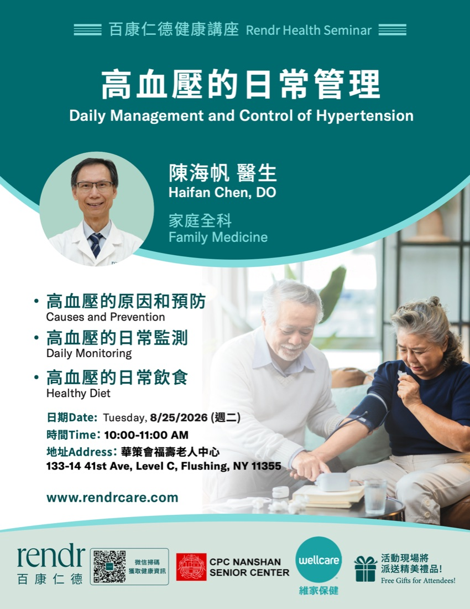
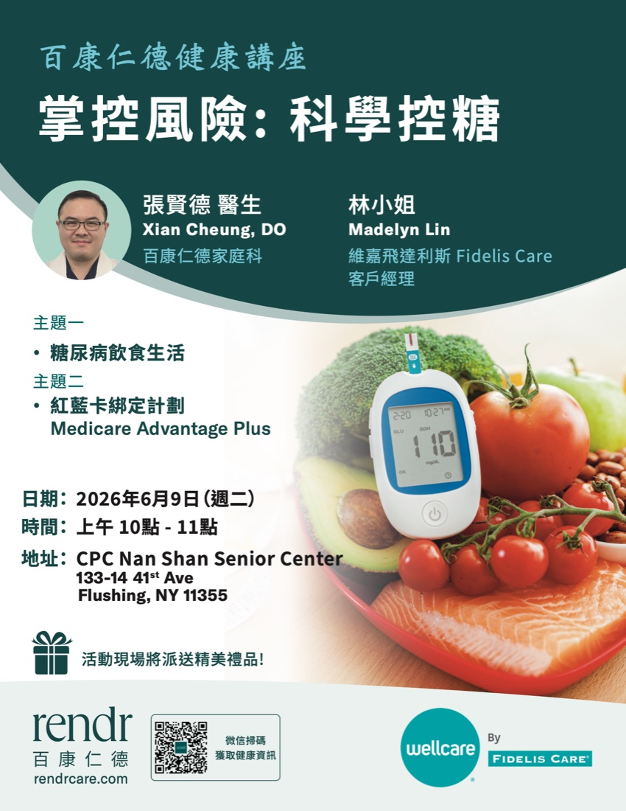
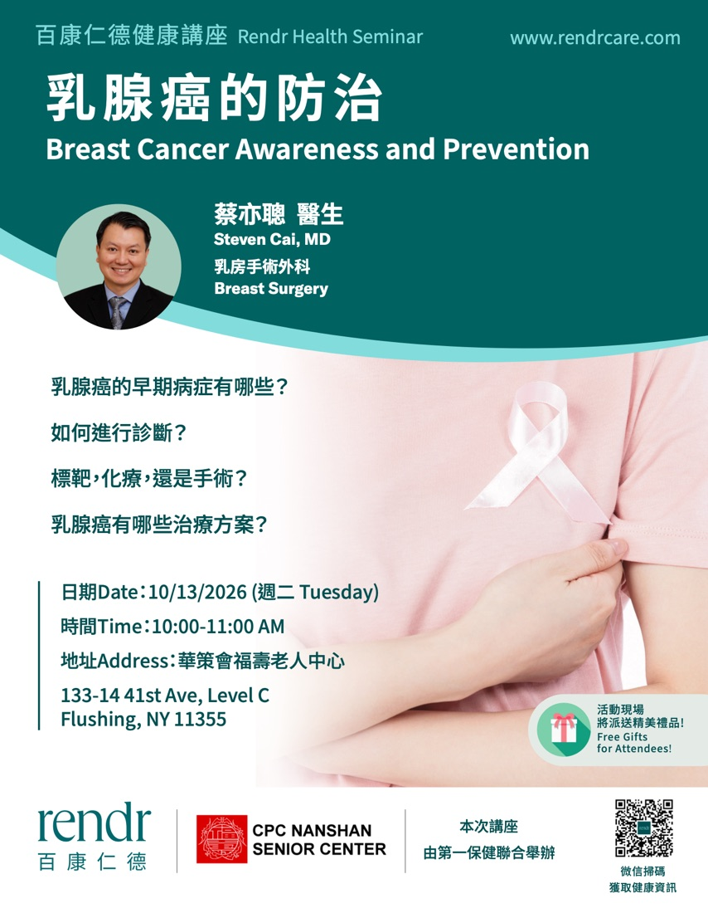
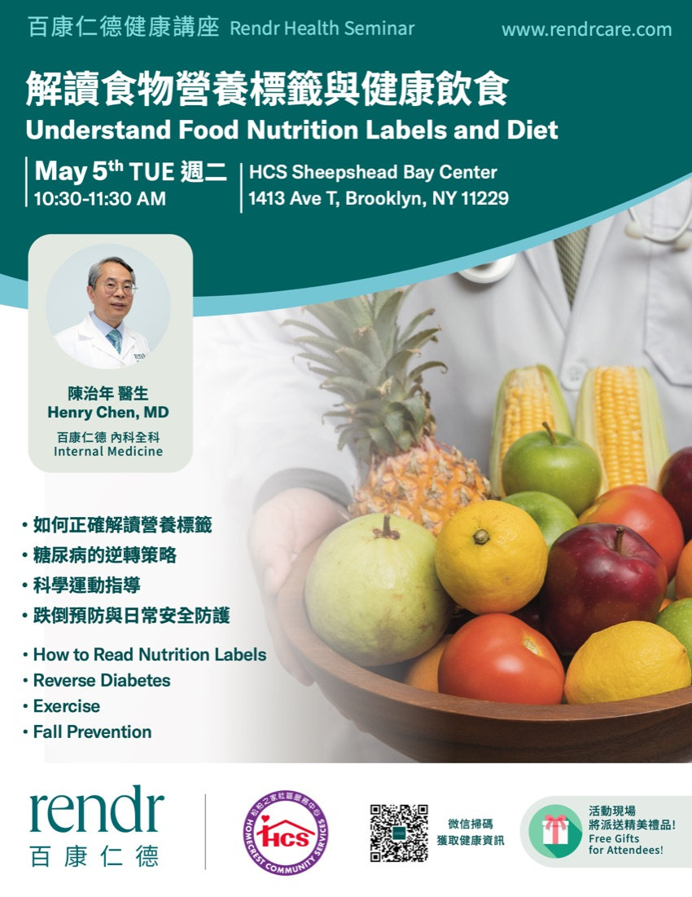
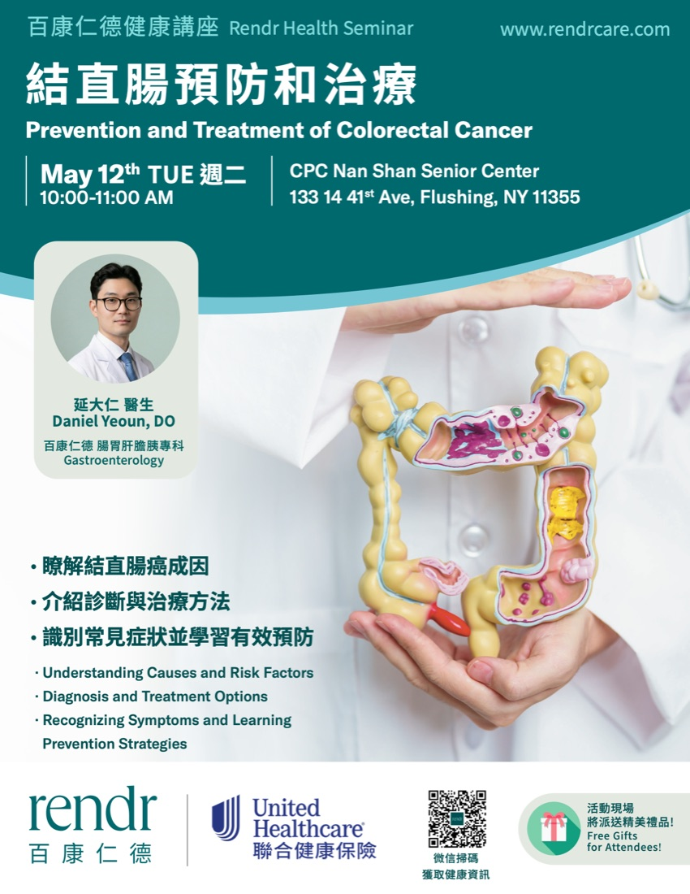
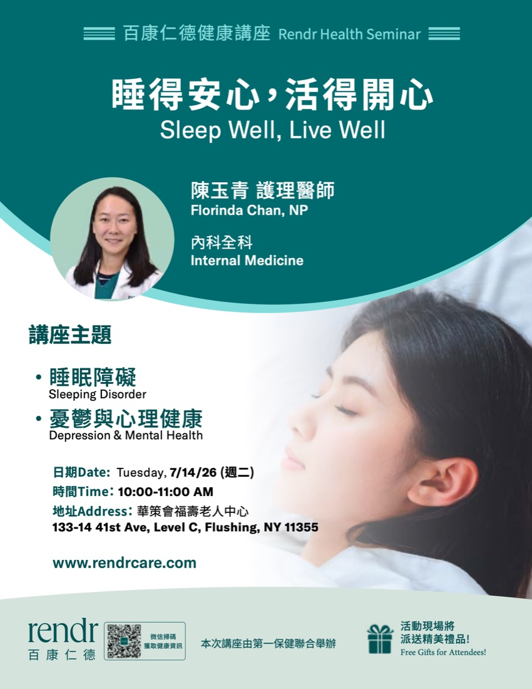
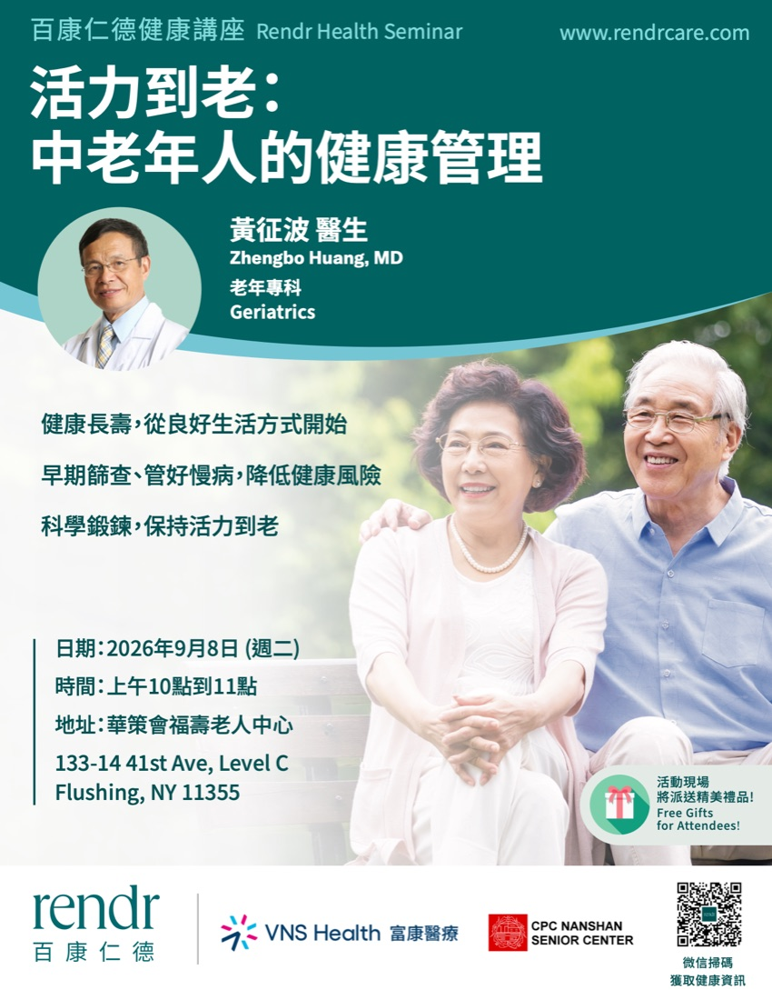
Turning healthcare education into measurable community engagement.
Partnership in action
Programs are coordinated with physicians, community organizations and payer partners, then delivered through seminars and community events.
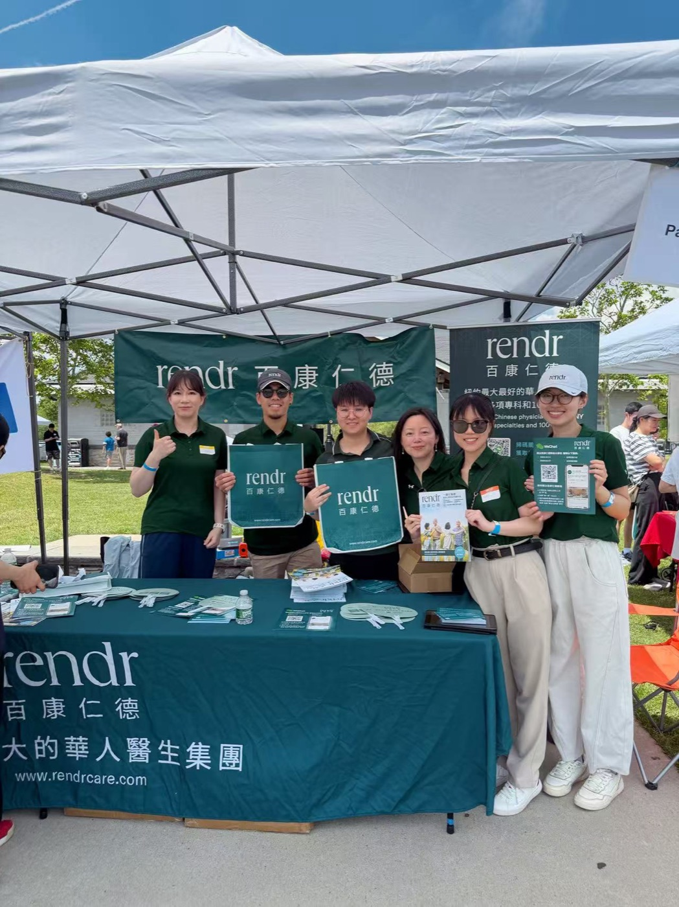
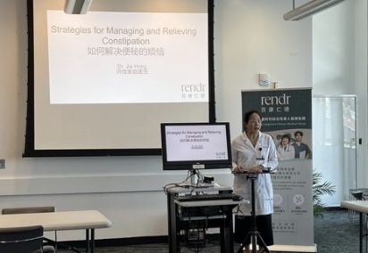
Case study 02
Managed an enterprise-wide rebrand across 120+ locations: signage implementation, SOP development and an ongoing patient survey program to measure the impact after launch.


Case study 03
Grew Rendr's social following from 3,000+ to 50,000+ organically, with no paid advertising, and contributed to a 15% increase in organic search traffic through Google Business Profile, website and email work.
WeChat Video and RedNote content ranked in the top 10% for engagement rate against similar health content, and 2026 WeChat articles drew 3.7× the reads of a comparable peer organization. Seven media partners: Sing Tao Daily, World Journal, SinoVision, Crain's New York, PIX11, iTalkBB and Qiao Bao. One SinoVision interview on Medicaid policy changes passed 140,000 views.
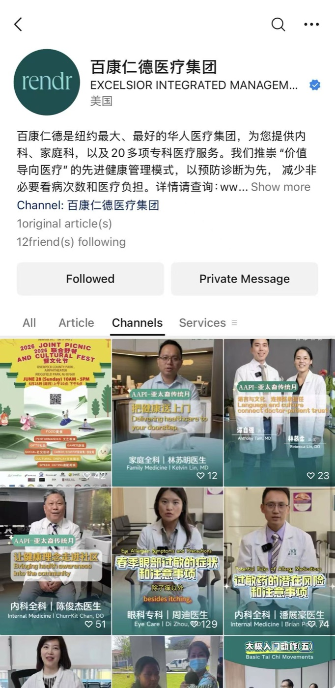
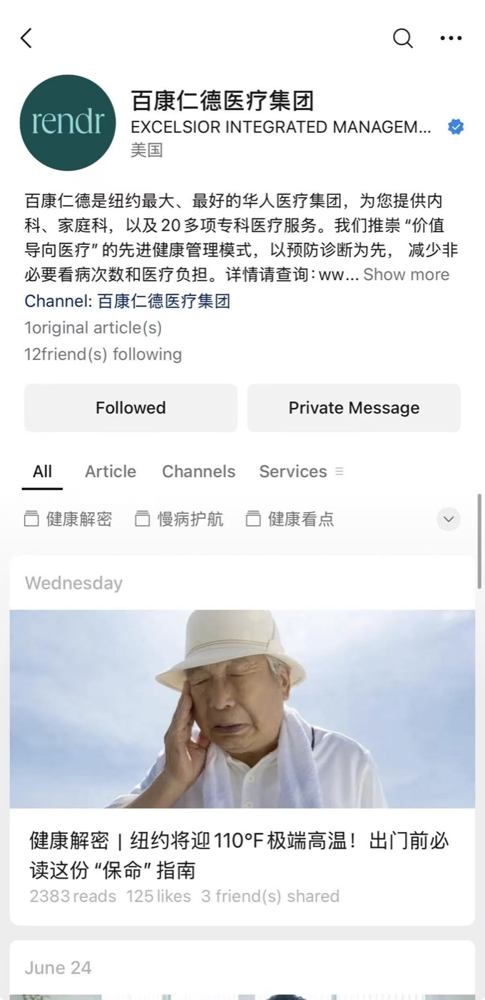
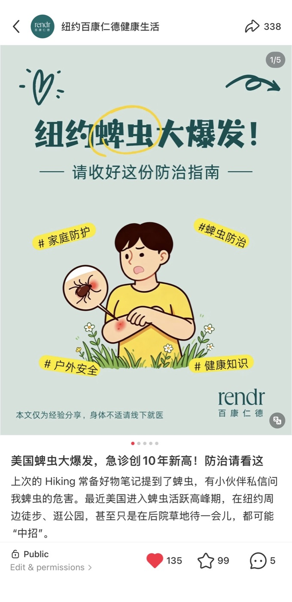
Case study 04
The challenge
Collect and analyze feedback from about 1,000 attendees at a large-scale event without a manual survey and prize-drawing process.
The result
Built an AI-assisted survey automation platform with Claude Code and deployed it through GitHub. The mobile QR-code experience supported 1,000 participants and automated response analysis, prize drawings and winner emails.
Experience
Community & provider marketing, 200+ B2B/B2C events, four clinic launches, a 120+ location rebrand, organic social growth from 3K to 50K, and ROI dashboards.
Monthly outreach to 20+ external clinics and physician offices to promote radiology services, contributing to a 30% increase in imaging referrals. Tracked provider leads and referral volume in Salesforce CRM, and managed social media, Google Business Profile and email.
Supervised the Chinese intake team with a 95–100% monthly case-opening rate, coordinating referrals, authorizations and enrollment workflows.
Languages: English, Cantonese, Mandarin.
Tools
Open to healthcare marketing, communications and marketing operations roles in New York.
huijun.wen46@gmail.com